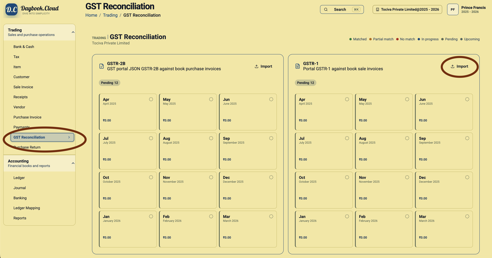
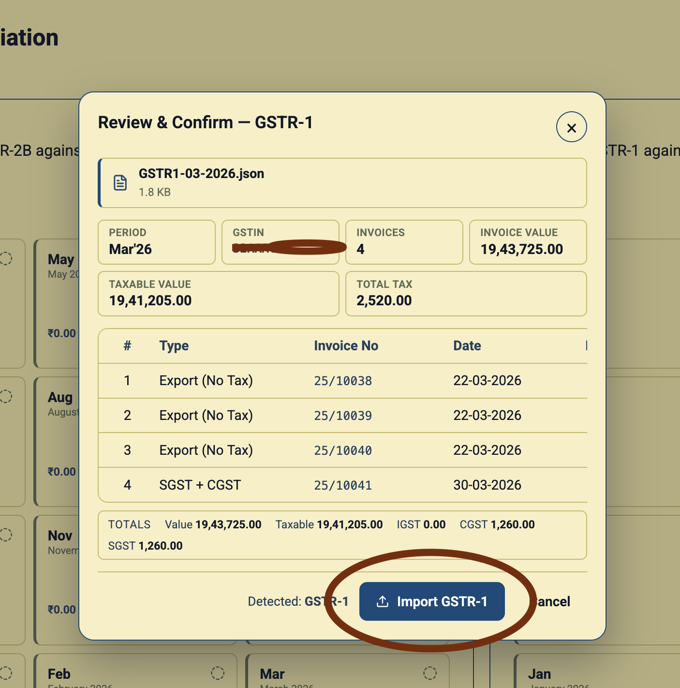
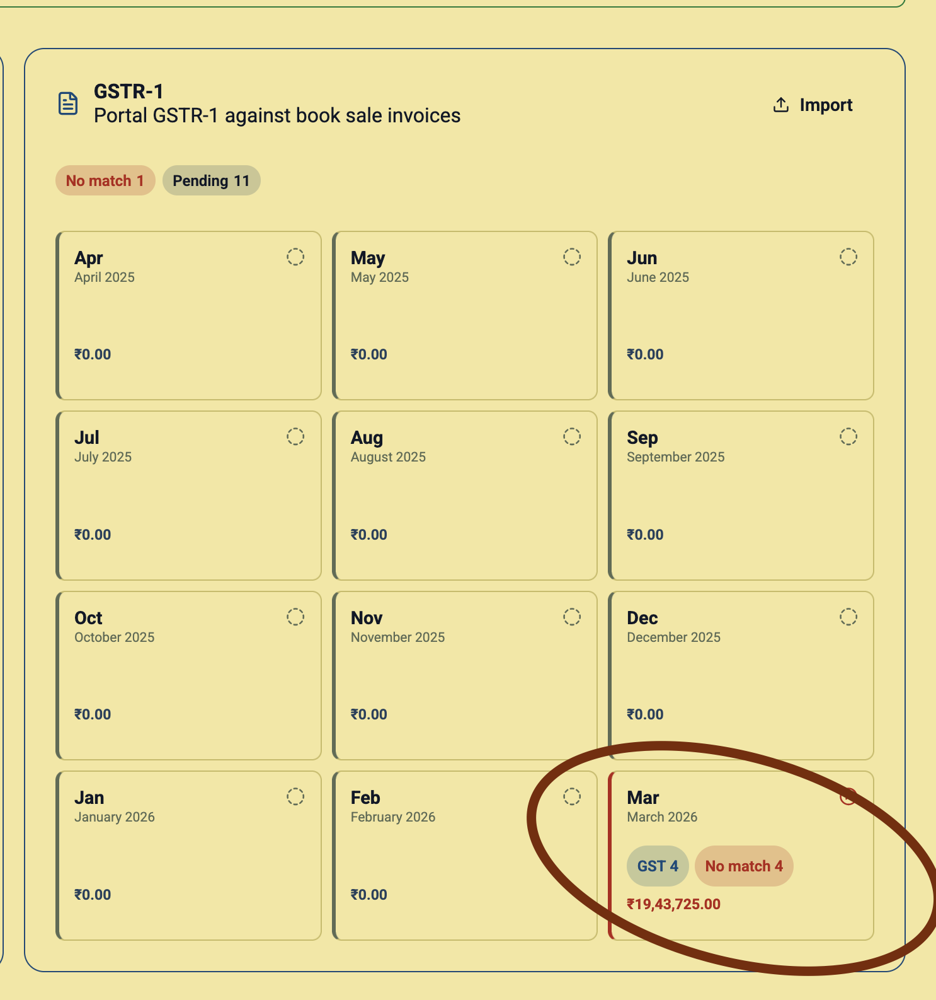

GSTR-1 reconciliation helps you compare the outward supplies reported on the GST portal with the sale invoices maintained in your books. In Daybook.Cloud, the GSTR-1 workflow starts by importing the JSON file downloaded from the GST portal.
GSTR-1 is the sales-side reconciliation file. Use it to reconcile portal GSTR-1 against book sale invoices. GSTR-2B is a separate purchase-side workflow used for portal GSTR-2B against book purchase invoices.
Before you start
Keep these details ready before importing the file:
- The company and financial year you want to review in Daybook.Cloud.
- The correct GSTIN for the business or branch.
- The return period, such as March 2026.
- The GSTR-1 JSON file downloaded from the GST portal for that period.
- The sale invoices already recorded in Daybook.Cloud for the same period.
Download the GSTR-1 JSON from the GST portal using the official return download option for the selected GSTIN, financial year, and tax period. GST portal screens can change, so always follow the current portal labels and confirm that the downloaded file belongs to the period you are reconciling.
Step 1: Open GST Reconciliation
In Daybook.Cloud, open Trading from the left navigation and select GST Reconciliation. The page shows separate cards for GSTR-2B and GSTR-1. Use the GSTR-1 card when you are working with sales return data from the GST portal.

Step 2: Import the GSTR-1 JSON
Click Import on the GSTR-1 card and select the JSON file downloaded from the GST portal. Daybook.Cloud reads the file and opens a review screen before anything is imported into the reconciliation grid.
You can also drag and drop the GSTR-1 JSON directly into the GSTR-1 grid section. This is useful when the file is already visible in Finder or your downloads folder and you want to place it straight into the relevant reconciliation area.
Step 3: Review the detected GSTR-1 file
The review screen confirms the detected return type and summarizes the file before import. Check the file name, period, GSTIN, invoice count, invoice value, taxable value, and total tax. If the GSTIN or period does not match your intended reconciliation month, cancel the import and choose the correct file.

The invoice preview helps you catch obvious file selection mistakes. For example, a March file should show the March return period and invoice rows from that reporting period. Totals should be checked against the GST portal download and your internal tax review process.
Step 4: Confirm the import
When the review details are correct, click Import GSTR-1. Daybook.Cloud imports the portal data into the GSTR-1 reconciliation section for the detected period.
After import, the period tile updates with the imported invoice count, matching status, and value. A period with differences can show a No match count so your team knows where review is still required.

Step 5: Reconcile against book sale invoices
Use the updated period tile to continue reviewing GSTR-1 against the sale invoices recorded in Daybook.Cloud. The purpose is to identify which portal invoices match your books and which invoices need attention before filing, correction, or internal review.
- Matched: Portal GSTR-1 data and book sale invoice details align.
- No match: A portal invoice needs review against the book sale invoice list.
- Pending: Periods or invoices still need reconciliation work.
- Partial match: Some fields may align while totals, tax, date, or invoice details still need checking.
Use the status counts as review signals, not as tax advice. Confirm final GST filing decisions with your accountant or tax adviser.
GSTR-1 import checklist
- Download the GSTR-1 JSON for the correct GSTIN, financial year, and return period.
- Open Trading > GST Reconciliation in Daybook.Cloud.
- Use the GSTR-1 Import button or drag and drop the file into the GSTR-1 grid section.
- Review the detected period, GSTIN, invoice count, values, and invoice rows.
- Click Import GSTR-1 only after confirming the file is correct.
- Review the imported period tile for count, value, and match status.
- Continue reconciliation against book sale invoices.